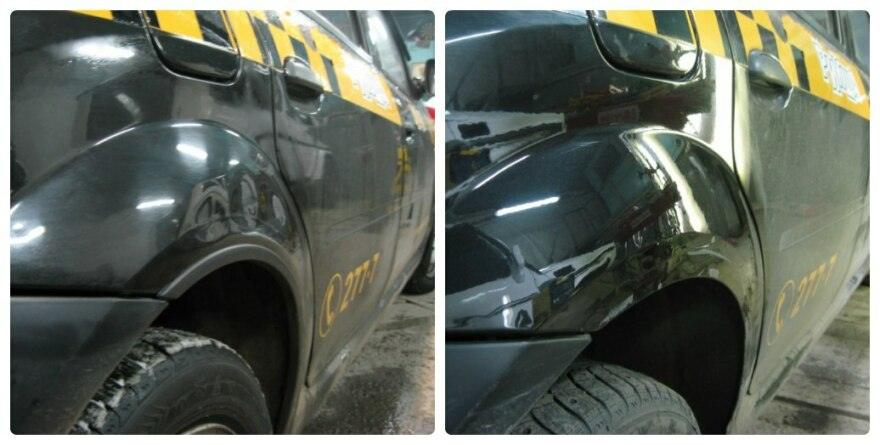
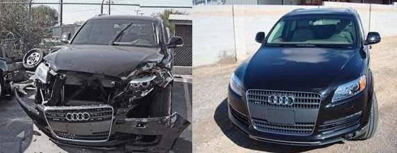

Плотное движение в городах и низкое качество дорожного полотна вызывают большое количество дорожно-транспортных происшествий. Конечно же, в них повреждается кузов авто, что делает работы по его ремонту востребованными в Красноярске.
В «АвтосервисПрофи» проводят комплексное кузовное обслуживание автомобиля с использованием профессионального оборудования. Это позволяет восстановить внешний вид автомобиля вне зависимости от степени повреждений. Мы заказываем комплектующие напрямую с заводов-производителей, что положительно отражается на наших ценах – они ниже, чем у конкурентов в Красноярске.
Ремонт кузова любой сложности
Кузовной ремонт – работы по восстановлению поврежденного кузова автомобиля. Дефекты могут появиться не только в результате аварии, наезда на бордюр или действия хулиганов, но также естественный износ портят исходное состояние кузова. Есть три уровня сложности восстановления авто:
- Первая категория – деформации в виде вмятин, сколов и трещин.
- Вторая категория – тяжелые повреждения, не влияющие на ходовую часть автомобиля.
- Третья категория – сложнейшие деформации, делающие авто непригодным для использования.
| Вид работ | Цена |
|---|---|
| Ремонт кузова | от 1000 руб |
| Удаление вмятин без покраски | от 500 руб |
| Удаление вмятин с покраской | от 1500 руб |
| Ремонт сколов | от 500 руб |
| Удаление царапин | от 500 руб |
| Полировка авто | от 3000 руб |
| Восстановление геометрии кузова | от 1000 руб |
Локальный кузовной ремонт
Локальные работы пользуются популярностью, так как небольшие дефекты автомобиля случаются чаще всего. Они затрагивают отдельные части авто, например, бампер или капот. Опытными мастерами «АвтосервисПрофи» в Красноярске проводятся такие работы по кузова автомобиля, как:
- Удаление сколов и царапин. Они появляются в результате попадания камней из-под колес впереди проезжающих машин, воздействия твердых осадков или небольших ДТП. Повреждения удаляются посредством полировки мпециальными пастами, которые наносятся на место деформации после удаления верхнего рыхлого слоя царапины или скола.
- Рихтовка автомобиля. Используется для нейтрализации глубоких деформаций и вмятин. Для этого наши работники применяют инструменты наподобие молотков с разными бойками, сварочных аппаратов, упоров и наковален. Например, удар молотка по вмятине с обратной стороны или сварка поврежденного элемента приводят кузов в первоначальное состояние.
- Покраска. Считается завершающей частью обслуживания автомобиля, направленной на восстановление поврежденного лакокрасочного покрытия. У нас осуществляется подбор краски на компьютерном оборудовании, а также работают профессиональные колористы. Это обеспечивает точный выбор краски для отдельной детали, которая не будет отличаться от цвета ЛКП. Также возможна и полная покраска машины любым цветом в соответствии с пожеланиями клиентов.


Полный кузовной ремонт
Применяется в том случае, когда автомобиль серьезно пострадал в дорожно-транспортном происшествии и локальными работами уже не обойтись. Полный ремонт подразумевает восстановление не только внешнего вида автомобиля, но и его нарушенной геометрии.
Геометрия восстанавливается на стапеле, представляющем собой оборудование в виде стенда, которое снимает координаты конечных точек кузова, прикладывает разнонаправленные усилия, что и приводит к ее восстановлению. Главная сложность при проведении такого ремонта и заключается в исправлении кузовной геометрии, поскольку это требует наличия надежного и точного стапеля.
Ни одна подобная процедура не принесет никакой пользы, если технические характеристики авто не будут приведены в норму. Езда с нарушенной кузовной геометрией влечет за собой повышенные риски попадания в аварии, так как ухудшает управляемость.
Ремонт кузова в Красноярске
В «АвтосервисПрофи» занимаются полным и локальным кузовным ремонтом по демократичным ценам – отсутствие посреднических издержек при заказе комплектующих позволяет нам держать их на привлекательном уровне. У нас работают мастера с 10-летним опытом в ремонте повреждений и деформаций. На все услуги по восстановлению предоставляется гарантия!
Чтобы записаться на ремонт автомобиля или получить консультацию, оставьте, пожалуйста, заявку на сайте или свяжитесь с менеджерами по телефону.